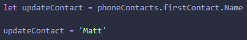

JavaScript and its relationship to HTML & CSS
Think of the following as the human body; HTML is the bone structure which is all the writing on the page by itself, which also includes images etc. no style to it just the foundation of the webpage.
CSS is the flesh of the webpage where you start to see the beauty and colour of it, along with the positioning of all your content
JavaScript is the muscle of the webpage where interactivity and functionality happens, for instance, you click on a button and then something else happens.
HTML & CSS are scripting languages, whereas JavaScript is a programming language.
Control Flow & Loops
So, lets say that everyday during the work week up until thursday, you have the exact same routine with absolutley no changes whatsoever. You wake up on friday and you are sick and you stay in bed all day. Now because you are sick your routine has changed for that day, it no longer meets the conditions of your routine for those first four days. That loop you were on is no longer true and the conditions of your routine have now changed to false because of this day in bed. Ending the Loop.
Control flow in JavaScript refers to the order in which the computer executes statements in the script, starting from the first line and ending at the last line.
Loops are apart of the control flow in JavaScript, basically, there is a start and end point and conditions in-between. If you never had that sick day in bed the loop would have continued to run because the conditions still evaluated to true, but as soon as the routine ended with the sick day, the conditions evaluated to false, ending the loop.
The DOM & how you interact with it
The Document Object Model or 'DOM' for short provides the means to manipulate the HTML document with JavaScript and ties your HTML & CSS together.
Picture a tree, and each branch is a node (which is made up of your HTML document content); with JavaScript you may manipulate the content on any of these nodes; for instance try clicking this button below!
This is an example of how you may interact with HTML content with DOM manipulation. The button element has an ID of "button" which can be access with JavaScript and now when the button is clicked the inner HTML will change! Showing at a basic level how JavaScript powers the interactivity within the website.
Difference between accessing data from Arrays & Objects
An Array is like a shopping list, where you can add many items to them, varying from one word, to a few, numbers, decimal numbers and so on.. see example below:
While there is 7 items in this list, the item named 'list' is actually only at position 6 of this array, this is because an array starts at a 0 index.
So if i wanted to grab the first element in the array(shopping list), i could; console.log(array[1]) and this would log 'i am Matt' to the console. Array's aren't very handy on their own, but are perfect when it comes to loops!
An Object is a little different to the shopping list style of an Array where it's sort of like the contacts directory in your phone. Check example below:

With an Object, you have a key, value pair. Key = Name, Value = Matthew. If you wanted to update someone's details from your main directory (phoneContacts), you could do the following:
This is called dot notation, as you see the periods between each Object name. Like a phone, you would go into phone contacts, then click on contact name, and finally update name.
Functions & why they are helpful
Functions are one of the fundamental building blocks in JavaScript, they're very versatile and allow you to re-use code wherever necessary. It's like going to the dentist and each step in the process of getting your teeth checked the dentist has a process in place for each checkup.
Each check is conducted in the same way but will occasionally run into a problem, that's where you have the flexibility to reuse this code to add in variables that you encounter. The function is like a dentists assitant who processes the function in a way that's effortless and with each checkup, the function is invoked and all the information is there for the dentist to work with.